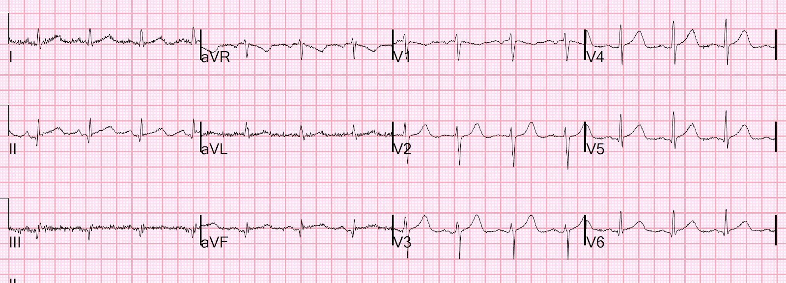
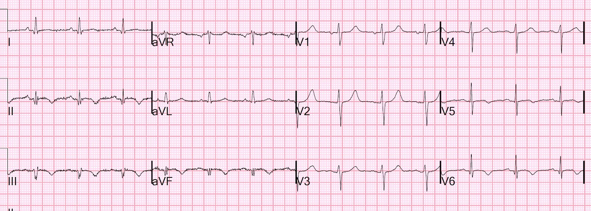
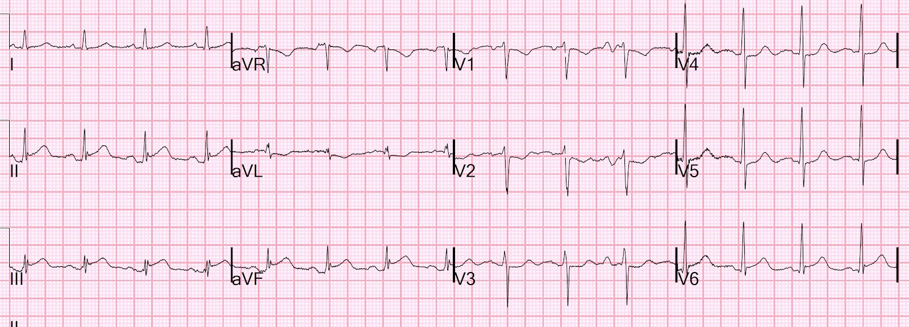
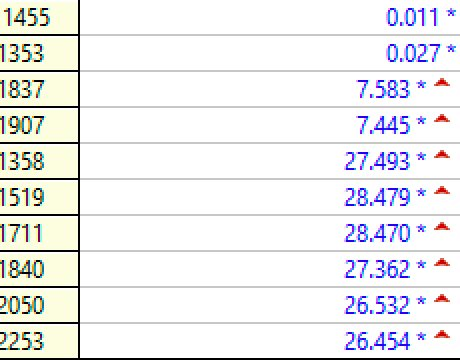
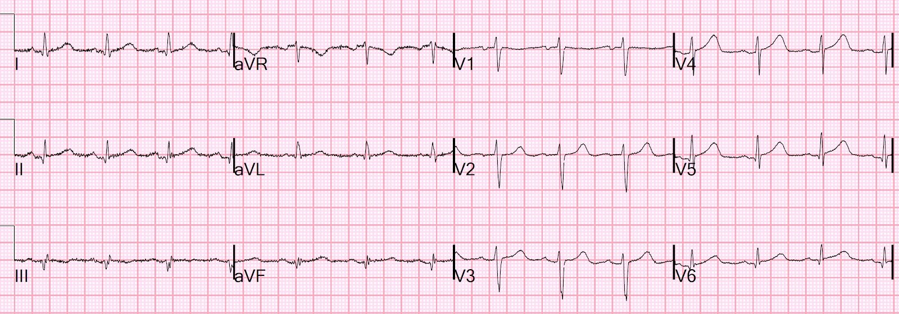
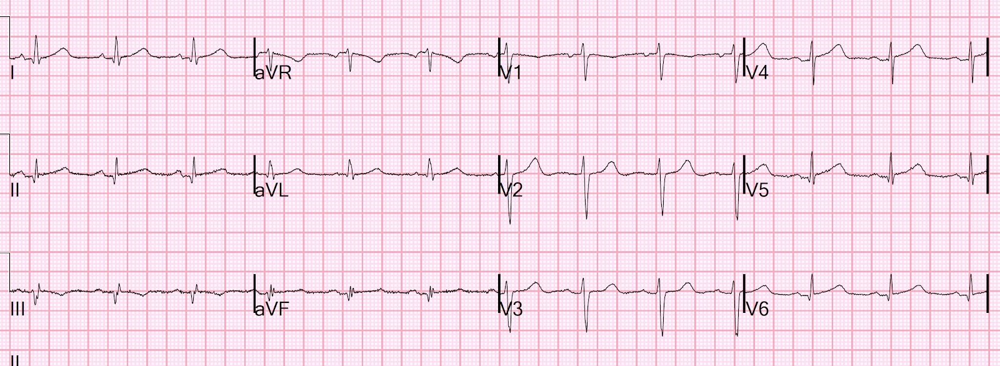
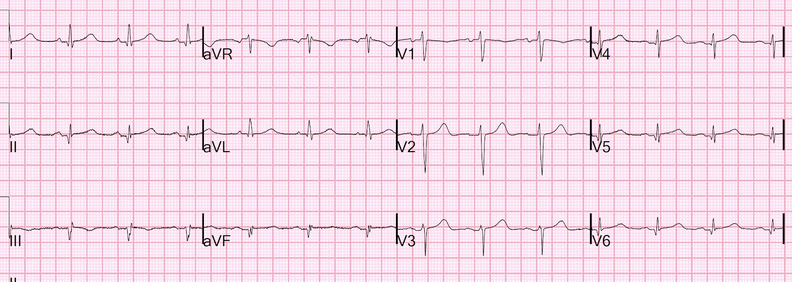
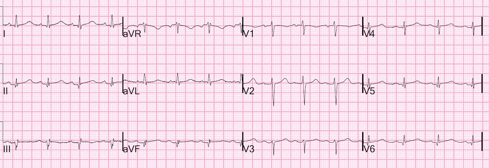
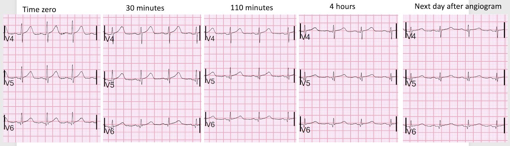

29/12/2021 — Sóng T tối cấp — bị bỏ sót. Nhồi máu cơ tim với động mạch vành không tắc nghẽn (MINOCA) có thể do nhồi máu cơ tim do tắc thoáng qua bởi huyết khối
Bản dịch tiếng Việt của bài "Hyperacute T-waves — missed. Myocardial Infarction with Non-Obstructive Coronary Arteries (MINOCA) may be due to transient thrombotic Occlusion MI." – Dr. Smith’s ECG Blog. Giữ nguyên toàn bộ 10 hình ảnh của bản gốc.
Huyết khối mạch vành (hai lần trên cùng một bệnh nhân!!) mà không có hẹp, thậm chí không có tổn thương thủ phạm
Đừng bỏ qua hình cuối cùng ở cuối bài, cho thấy chuỗi sóng T ở V4-V6
Gần đây tôi có một cuộc trao đổi với một chuyên gia điện tâm đồ và tim mạch cực kỳ thông minh và tuyệt vời. Ông ấy hoài nghi việc có thể có OMI kèm sóng Wellens mà không có hẹp đáng kể trên chụp mạch vành.
Tôi nói với ông rằng thỉnh thoảng tôi có gặp, và điều này xảy ra do huyết khối tại các tổn thương không gây tắc nghẽn, dẫn đến tắc hoàn toàn, nhưng sau đó tan hoàn toàn và không còn thấy hẹp vào thời điểm chụp mạch vành. Tôi nói rằng ngay cả khi không có hẹp, chúng thường vẫn cho thấy một tổn thương thủ phạm (mảng xơ vữa loét), nhưng không phải lúc nào cũng vậy.
Ngay hôm sau cuộc trao đổi đó, ca này đến: nhồi máu cơ tim do tắc thoáng qua (Transient OMI) xảy ra hai lần, nhưng không có bất kỳ chỗ hẹp nào, thậm chí không có tổn thương thủ phạm.
Ca này cho thấy bạn phải đọc điện tâm đồ cẩn thận đến mức nào, và phải so sánh kích thước sóng T cẩn thận đến mức nào. Ca này cho thấy để chẩn đoán, bạn phải nhìn không chỉ vào phim chụp mạch vành, mà còn vào triệu chứng, điện tâm đồ, troponin và siêu âm tim.
Bạn sẽ thấy rằng phim chụp mạch vành ở lần nhập viện đầu tiên đã biểu hiện một tổn thương thủ phạm gây tắc mà ban đầu không ai nhìn thấy, và chỉ được phát hiện về sau trên lần chụp mạch vành hơn một năm sau đó.
Ca bệnh
Một phụ nữ 40 mấy tuổi bị đái tháo đường đến viện vì đau ngực sau xương ức, cảm giác giống cơn nhồi máu cơ tim trước đây của bà, 1,5 năm trước. Lần nhồi máu cơ tim cấp trước đó được chẩn đoán là MINOCA (nhồi máu cơ tim với động mạch vành không tắc nghẽn – Myocardial Infarction with Nonobstructive Coronary Arteries.)
Chúng tôi sẽ cung cấp một số chi tiết về lần nhồi máu trước đó ở phần dưới.
Đây là điện tâm đồ đầu tiên của bà tại khoa cấp cứu (ED) (điện tâm đồ 1):


Bạn nghĩ gì?
Diễn giải của Smith: sóng T ở V4-V6 là sóng T tối cấp (hyperacute). Đây KHÔNG phải sóng T bình thường. Chúng to và đầy đặn. Các chuyển đạo thành dưới trông cũng rất đáng ngờ, với sóng Q và đoạn ST thẳng đuỗn ở chuyển đạo II và aVF. Điều này cũng rất đáng ngờ.
Hãy xem điện tâm đồ gần nhất của bà, ngay trước khi ra viện sau đợt nằm viện vì lần nhồi máu cơ tim trước:


Đây là diễn tiến hoàn toàn điển hình của một nhồi máu cơ tim do tắc (OMI) thành dưới. Có sóng Q thành dưới, ST chênh lên nhẹ (ST dạng vòm – “coving” – hay sóng T Pardee) kèm sóng T đảo ngược. Cũng có sóng T đảo ngược ở các chuyển đạo bên V4-V6. Vậy lần OMI trước đó là OMI dưới-bên (tôi sẽ trình bày điện tâm đồ lúc nhập viện ở phần dưới)
Vậy điện tâm đồ hôm nay có sóng T dương mới ở các chuyển đạo thành dưới và thành bên. Đây có phải là giả bình thường hóa (pseudo-normalization) không?
Không!! Diễn tiến tự nhiên của sóng T đảo ngược sau nhồi máu cơ tim cấp là trở nên dương trong vòng vài tuần đến vài tháng. Ngay cả khi không có nhồi máu cơ tim mới, người ta vẫn chờ đợi sóng T ở II, III, aVF và V4-V6 trở nên dương (nhưng không tối cấp như ở đây!)
Giả bình thường hóa thực sự xảy ra trong vòng vài ngày và là do tắc lại cấp tính của một động mạch vành trước đó đã tắc và đã được tái tưới máu.
__________
Xem 3 ca sau về giả bình thường hóa trong tổn thương LAD:
—Pseudonormalization of Wellens’ Waves (Giả bình thường hóa sóng Wellens)
—Subtle LAD Occlusion with Pseudonormalization of Wellens’ Waves. (Tắc LAD kín đáo kèm giả bình thường hóa sóng Wellens)
—Why we need continuous 12-lead ST segment monitoring in Wellens’ syndrome (Vì sao cần theo dõi liên tục đoạn ST trên mười hai chuyển đạo trong hội chứng Wellens)
__________
Cách duy nhất để bạn biết điện tâm đồ 1 ở trên có thiếu máu cục bộ là nhận ra các sóng T tối cấp. Điện tâm đồ cũ chỉ giúp bạn ở chỗ cho thấy các sóng Q là sóng Q cũ.
Với lần OMI trước, đây là điện tâm đồ lúc nhập viện:


Nhồi máu cơ tim do tắc thành dưới, thành sau, thành bên, đồng thời đạt tiêu chuẩn STEMI ở các chuyển đạo thành dưới (STEMI)
Diễn biến troponin I (thế hệ hiện hành, không phải độ nhạy cao) ở lần nhập viện trước đó, tính bằng ng/mL:


Một nhồi máu cơ tim do tắc cấp diện rộng
Chụp mạch vành vào thời điểm đó cho thấy:
1. Thân chung động mạch vành trái: không hẹp đáng kể.
2. LAD: mạch típ II, chỉ vừa vòng tới quanh mỏm. Cấp máu cho hai nhánh chéo. Có các bất thường bờ lòng mạch ở LAD nhưng không hẹp đáng kể. Tương tự, có tổn thương mức độ vừa, đến 50%, ở D1.
3. LCX: không ưu thế. Cấp máu cho vài nhánh bờ tù (OM) rất nhỏ và sau đó là một nhánh OM lớn. Không có chỗ hẹp đáng kể.
4. RCA: Cấp máu cho một nhánh RPDA và một nhánh RPLA nhỏ. Không có chỗ hẹp hay tắc mạch rõ ràng.
Nói cách khác: động mạch vành không tắc nghẽn
Siêu âm tim chính thức:
Rối loạn vận động thành khu trú – thành bên và dưới-bên
Vậy lần nhập viện trước đó là MINOCA.
Hãy quay lại lần nhập viện thứ 2. Một lần nữa, điện tâm đồ 1:

Cơn đau của bà bắt đầu giảm dần rồi hết hẳn, và thêm nhiều điện tâm đồ được ghi lại:
Thời điểm 30 phút:


Sóng T thành bên đang nhỏ dần ở V4-V6
Thời điểm 110 phút:


Sóng T ở V4-V6 còn nhỏ hơn nữa
Sóng T thành dưới đang đảo ngược (“sóng Wellens thành dưới”, hay sóng T tái tưới máu)
Thời điểm 4 giờ


Giờ đây các sóng T tối cấp đã hồi phục hoàn toàn và sóng T thành dưới đảo ngược.
Tuy nhiên, theo những gì tôi biết, không ai nhận ra rằng các sóng T này là sóng T thiếu máu cục bộ. Thực tế, các lần đọc sau đó ghi “Bệnh nhân không có dòng tổn thương trên các điện tâm đồ.”
Troponin I độ nhạy cao đầu tiên là 185 ng/L (giá trị này có giá trị tiên đoán dương 70% đối với nhồi máu cơ tim típ 1 tại khoa chúng tôi, nhưng không nhất thiết đối với nhồi máu cơ tim do tắc).
Các lần troponin sau đó tăng lên 860, rồi 2401, rồi 6658 ng/L.
Vì cơn đau đã hết, và thiếu máu cục bộ chưa bao giờ được nhận ra trên điện tâm đồ, bà được dùng heparin và aspirin, và việc chụp mạch vành được trì hoãn đến hôm sau.
Kết quả chụp mạch vành:
1. Thân chung động mạch vành trái: Không hẹp.
2. LAD: ngoằn ngoèo. Tổn thương lan tỏa mức độ vừa ở đoạn xa về phía mỏm. Không có
chỗ hẹp khu trú rõ ràng. Cấp máu cho một nhánh chéo không hẹp.
3. LCX: không ưu thế. Cấp máu cho các nhánh OM rất nhỏ và một nhánh
LPLA (sau bên trái) kích thước vừa, ngoằn ngoèo, với một chỗ hẹp 80% ở rất xa trên một nhánh khẩu kính nhỏ mà khi
xem lại phim chụp mạch vành trước đó, đã từng bị tắc và nay đã thông.
4. Nhánh trung gian (ramus intermedius): không hẹp đáng kể.
5. RCA: ưu thế. Cấp máu cho một nhánh RPDA và một nhánh RPLA nhỏ. Không hẹp.
Nói cách khác: động mạch vành không tắc nghẽn
Theo tôi, điều này hàm ý rằng chẩn đoán MINOCA TRƯỚC ĐÂY là không đúng, vì bác sĩ chụp mạch giờ đây thấy một động mạch đã bị tắc ở lần chụp trước nhưng nay đã thông.
Nhưng theo những gì tôi biết, lần chụp mạch vành thứ 2 này không cho thấy tổn thương thủ phạm của lần nhập viện thứ 2.
Tôi không rõ liệu chính mạch máu này có lại là thủ phạm hay không.
Troponin độ nhạy cao đạt đỉnh 14.143 ng/L. Mức này rất cao và là mức điển hình của nhồi máu cơ tim do tắc [kể cả OMI STEMI dương tính (STEMI (+) OMI)].
Đây là điện tâm đồ sau chụp mạch vành:


Tất cả các sóng T tối cấp giờ đã trở về bình thường
Ở đây tôi đặt V4-V6 của cả 5 điện tâm đồ vào cùng một hình


Giờ thì các sóng T tối cấp ở V4-V6 trở nên rõ ràng. Các sóng T ở tận cùng bên phải là bình thường, sau tái tưới máu.
Không có tổn thương nào có thể đặt stent. Bà được điều trị nội khoa cho tình trạng được cho là hội chứng vành cấp (ACS) MINOCA.
MINOCA (nhồi máu cơ tim với động mạch vành không tắc nghẽn)
Ở đây tôi không có đủ thời gian và sức để viết một bài tổng quan về MINOCA.
Nhưng có vài điểm:
Định nghĩa MINOCA dựa trên việc bệnh nhân thỏa mãn cả ba tiêu chuẩn chẩn đoán chính, cụ thể là:
1) Định nghĩa toàn cầu về nhồi máu cơ tim cấp (đòi hỏi có thiếu máu cục bộ);
2) có động mạch vành không tắc nghẽn trên chụp mạch (định nghĩa là không có hẹp động mạch vành ≥50%) ở bất kỳ động mạch nào có khả năng liên quan đến nhồi máu; và
3) không có một nguyên nhân đặc hiệu khác, rõ ràng trên lâm sàng, giải thích cho biểu hiện cấp tính.
MINOCA có thể do: co thắt mạch vành, rối loạn chức năng vi mạch vành, phá vỡ mảng xơ vữa, huyết khối/thuyên tắc mạch vành tự phát, và bóc tách động mạch vành; các rối loạn cơ tim, bao gồm viêm cơ tim, bệnh cơ tim takotsubo và các bệnh cơ tim khác.
Chúng ta biết rằng phần lớn nhồi máu cơ tim cấp típ 1 do nứt vỡ mảng xơ vữa và huyết khối xảy ra ở các tổn thương hẹp dưới 50% (xem tài liệu tham khảo của Libby). Điều này vẫn đúng bất chấp xu hướng đã biết là các chỗ hẹp khít hơn dễ hình thành huyết khối hơn. Lý do mang tính quần thể: trong cộng đồng có nhiều chỗ hẹp mức độ vừa hơn nhiều so với chỗ hẹp khít, nên nhiều ca nhồi máu cơ tim phát sinh từ những chỗ hẹp vừa này hơn.
Ngay cả ở những bệnh nhân có chỗ hẹp vừa bị huyết khối, phần lớn phim chụp mạch vành cho thấy hẹp trên 50% sau biến cố. Tuy nhiên, hoàn toàn có thể hình dung rằng nhiều huyết khối ở tổn thương không tắc nghẽn tan hoàn toàn và không để lại chỗ hẹp trên phim chụp mạch vành trong cùng ngày hoặc ngày hôm sau. Huyết khối mạch vành kèm tan hoàn toàn rõ ràng là có thể xảy ra, nhưng mức đóng góp của nó vào MINOCA thực sự chưa được biết vì hiếm khi có khảo sát đầy đủ. Vấn đề này khó nghiên cứu vì việc quan sát động mạch trên chụp mạch không hoàn hảo, và không phải lần chụp mạch vành nào cũng dùng siêu âm trong lòng mạch (IVUS) để đánh giá mảng xơ vữa không nhìn thấy được hoặc mảng xơ vữa mà sự nứt vỡ và loét không thể thấy trên phim chụp mạch.
Hơn nữa, bệnh cảnh lâm sàng đau ngực đột ngột, dấu hiệu điện tâm đồ điển hình của tắc mạch (sóng T tối cấp trong ca này), dấu hiệu điện tâm đồ phân bố theo vùng cấp máu của một động mạch vành, troponin tăng rồi giảm với đỉnh nằm trong khoảng điển hình của STEMI/OMI, và rối loạn vận động thành mới ở vùng mà điện tâm đồ chỉ ra, phải được coi là do huyết khối mạch vành. Mức độ hẹp không phải là yếu tố dự báo tốt cho huyết khối, và tổn thương thủ phạm có thể không nhìn thấy được. Ngay cả khi có hẹp khít, đó cũng không phải là bằng chứng về tổn thương thủ phạm, vì nhiều người vốn đã có những chỗ hẹp khít cố định từ trước. Có thể có một chỗ hẹp khít mạn tính và một tổn thương không tắc nghẽn bị huyết khối.
Các nghiên cứu hiện nay về MINOCA đã đánh giá tiên lượng của những bệnh nhân này, ghi nhận tỷ lệ tử vong do mọi nguyên nhân sau 12 tháng là 4,7% (KTC 95%, 2,6–6,9),3 và các nghiên cứu so sánh nhất quán cho thấy tiên lượng tốt hơn so với những người bị nhồi máu cơ tim cấp (AMI) kèm bệnh động mạch vành tắc nghẽn.
Lindahl và cs. đã liên hệ các liệu pháp điều trị nhồi máu cơ tim điển hình như statin và thuốc ức chế men chuyển (ACE) với việc giảm đáng kể tử vong sau 1 năm ở bệnh nhân MINOCA, gợi ý rằng những bệnh nhân này thực sự có sinh lý bệnh tương tự bệnh nhân nhồi máu cơ tim có bệnh mạch vành tắc nghẽn.
Trích từ UpToDate:
Huyết khối cấp tại vị trí mảng xơ vữa lệch tâm không gây tắc nghẽn — Nhiều mảng xơ vữa phát triển ra phía ngoài thay vì lấn vào lòng động mạch. Những mảng “tái cấu trúc dương tính” này thường giàu lipid và có vỏ xơ mỏng; chúng dễ bị vỡ vào lòng mạch [1,9,10]. Huyết khối thoáng qua và bán phần tại vị trí một mảng xơ vữa không gây tắc nghẽn, sau đó tiêu sợi huyết tự phát và thuyên tắc đoạn xa, có thể là một trong những cơ chế gây ra MINOCA. Tương tự, mòn mạch vành kèm mất lớp nội mô bề mặt, có thể do tích tụ hyaluronan và bạch cầu trung tính, cũng có thể gây MINOCA [1,11]. (Xem “Cơ chế của hội chứng vành cấp liên quan đến xơ vữa động mạch”.)
Lý do những ca này bị xếp vào MINOCA là vì chụp mạch vành có giá trị hạn chế trong việc làm rõ huyết khối liên quan đến mảng xơ vữa như một nguyên nhân gây huyết khối, do độ phân giải thấp cũng như do nó không khảo sát được lòng mạch. Vì vậy, các phương tiện hình ảnh học trong lòng mạch vành đóng vai trò then chốt trong bối cảnh này. Nứt vỡ hoặc mòn mảng xơ vữa đã được chẩn đoán bằng siêu âm trong lòng mạch ở khoảng 40 phần trăm phụ nữ bị MINOCA [12]. Chụp cắt lớp quang học (OCT), nhờ độ phân giải cao, có thể cung cấp thêm thông tin [10,13].
Vì MINOCA gắn với nguy cơ tái phát biến cố tim mạch theo thời gian, tương đương với nguy cơ ở bệnh nhân hội chứng vành cấp (ACS) có xơ vữa gây tắc nghẽn [5,14,15], những bệnh nhân này cần điều trị kháng tiểu cầu kép trong 12 tháng và statin. Đặc biệt, điều trị hạ lipid dài hạn bằng statin sau nhồi máu cơ tim gắn với sự gia tăng đáng kể độ dày vỏ xơ, song song với giảm hàm lượng lipid của mảng xơ vữa [16]. (Xem “Dự phòng biến cố bệnh tim mạch ở người đã có bệnh (dự phòng thứ phát) hoặc có nguy cơ rất cao”.)
Trích từ Gue và cs.
MINOCA biểu hiện STEMI so với MINOCA biểu hiện NSTEMI
STEMI xảy ra khi có thiếu máu cục bộ xuyên thành do tắc hoàn toàn thoáng qua hoặc kéo dài của động mạch vành liên quan đến nhồi máu. Ở bệnh nhân biểu hiện nhồi máu cơ tim không ST chênh lên (NSTEMI), ổ nhồi máu nằm dưới nội tâm mạc. Khác biệt sinh lý bệnh này dường như cũng hiện diện trong nhóm MINOCA. Dữ liệu sổ bộ cho thấy 6–11% bệnh nhân nhồi máu cơ tim cấp có động mạch vành không tắc nghẽn. Trong y văn, MINOCA có xu hướng biểu hiện dưới dạng NSTEMI thường gặp hơn STEMI: tỷ lệ MINOCA được báo cáo ở bệnh nhân biểu hiện NSTEMI là khoảng 8–10% và ở các nhóm STEMI là 2,8–4,4%. Điều này dẫn đến việc bệnh nhân MINOCA biểu hiện STEMI ít được đại diện trong y văn. Phần lớn nghiên cứu khảo sát các nhóm ACS chưa phân loại, chỉ một số ít cung cấp dữ liệu riêng. Các nghiên cứu này cho thấy tử vong sau 1 năm của MINOCA biểu hiện STEMI là 4,5%, so với tử vong của bệnh nhân MINOCA ACS không chọn lọc là 4,7%. Căn nguyên nền của MINOCA tương tự giữa những người biểu hiện STEMI và toàn bộ bệnh nhân MINOCA có ACS, với căn nguyên không do mạch vành chiếm 60–70% số người biểu hiện STEMI và 76% bệnh nhân ACS không chọn lọc.
Tài liệu tham khảo:
1. Lindahl B, Baron T, Erlinge D, và cs. Medical Therapy for Secondary Prevention and Long-Term Outcome in Patients With Myocardial Infarction With Nonobstructive Coronary Artery Disease. Circulation [Internet] 2017;135(16):1481–9. Truy cập tại: http://dx.doi.org/10.1161/CIRCULATIONAHA.116.026336 https://www.ahajournals.org/doi/epdf/10.1161/CIRCULATIONAHA.116.026336
2. Pasupathy S, Tavella R, Beltrame JF. Myocardial Infarction With Nonobstructive Coronary Arteries (MINOCA): The Past, Present, and Future Management [Internet]. Circulation. 2017;135(16):1490–3. Truy cập tại: http://dx.doi.org/10.1161/CIRCULATIONAHA.117.027666 https://www.ahajournals.org/doi/epdf/10.1161/CIRCULATIONAHA.117.027666
3. Gue YX, Kanji R, Gati S, Gorog DA. MI with Non-obstructive Coronary Artery Presenting with STEMI: A Review of Incidence, Aetiology, Assessment and Treatment. Eur Cardiol [Internet] 2020;15:e20. Truy cập tại: http://dx.doi.org/10.15420/ecr.2019.13
4. Libby P. Mechanisms of acute coronary syndromes and their implications for therapy. N Engl J Med [Internet] 2013;368(21):2004–13. Truy cập tại: http://www.ncbi.nlm.nih.gov/entrez/query.fcgi?cmd=Retrieve&db=PubMed&dopt=Citation&list_uids=23697515